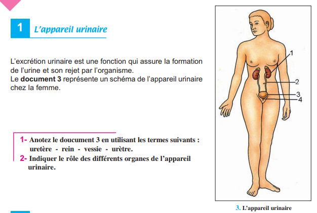
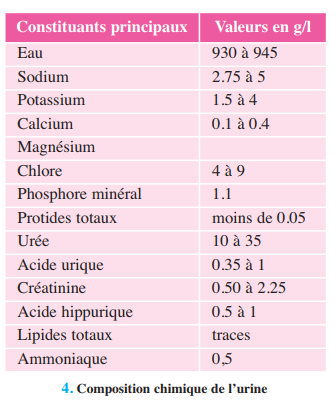
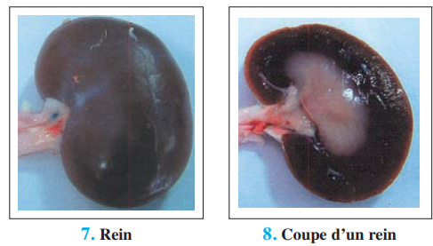
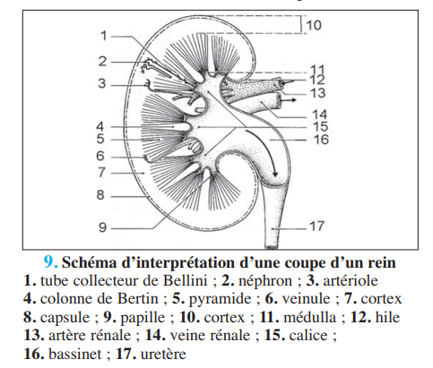
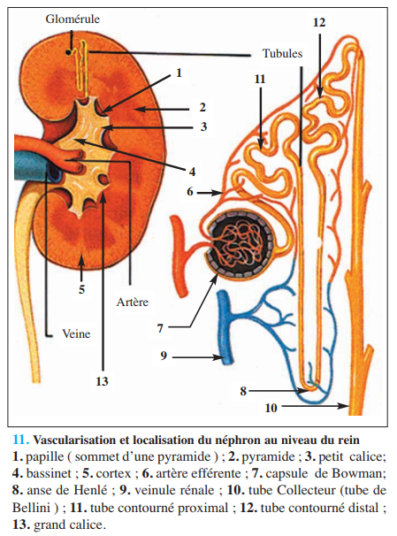
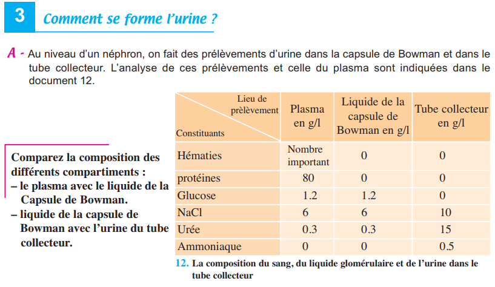
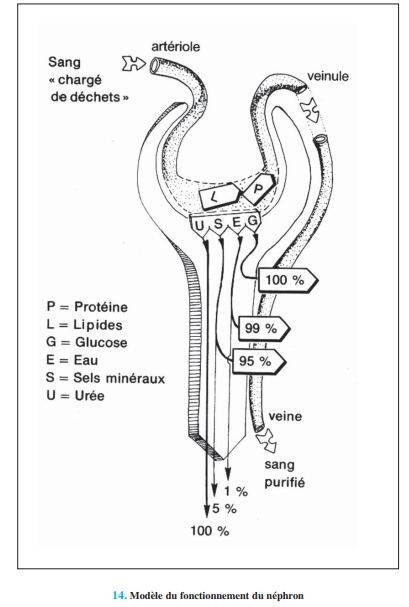
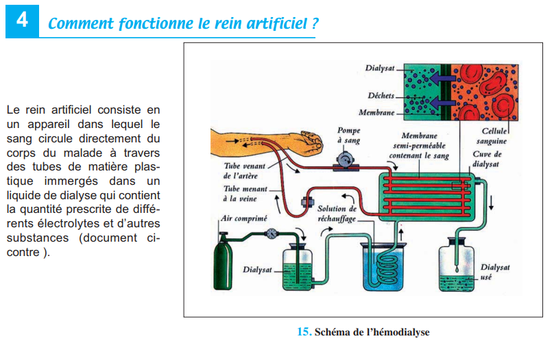

D'après le programme officiel tunisien (Thème 1, Partie IV), ce chapitre vise à :
1 Reconnaître les organes de l'appareil urinaire et leurs rôles
2 Expliquer les mécanismes de la formation de l'urine
3 Expliquer comment l'excrétion urinaire participe à la régulation du milieu intérieur
📚 Situation Problème (p.127-128)
L'urine constitue la voie principale du rejet hydrique (1,5 L/j). Elle se forme à partir du sang et est constituée d'eau, de sels minéraux et de déchets cellulaires (urée, créatinine, acide urique). L'excrétion urinaire intervient dans la régulation de la constance du milieu intérieur. Quand il fait chaud, la miction diminue et l'urine est plus concentrée en NaCl. Après absorption d'eau, l'urine est abondante mais diluée. Un régime sans sel produit une urine abondante et diluée.
Le milieu intérieur (Ch.7) a une composition constante : eau ≈ 90%, sels minéraux, protéines, glucose. Le rein est l'organe principal de l'excrétion urinaire. En cas de déficience rénale, le traitement par hémodialyse (rein artificiel) est vital.
❓ 3 Questions directrices
Comment se forme l'urine dans le rein ?
Quels sont les mécanismes de filtration, réabsorption et sécrétion ?
Comment l'excrétion urinaire participe-t-elle à la régulation du milieu intérieur ?
🧠 Comprendre avant de mémoriser
L'excrétion urinaire (diurèse) est assurée par le néphron, unité fonctionnelle du rein (≈ 1 million/rein). Elle comporte trois étapes : la filtration glomérulaire (passive — 170 L/j d'urine primitive), la réabsorption (active pour sels/glucose, passive pour l'eau — 168,5 L/j retournent au sang) et la sécrétion/excrétion (active — élimination de déchets). Certaines substances sont à seuil (glucose : excrété si glycémie > 1,7 g/l), d'autres sont sans seuil (urée, créatinine, médicaments — toujours excrétées). L'excrétion urinaire est régulée par des hormones (ADH, aldostérone) pour maintenir l'homéostasie.
Clique sur chaque notion · Pièges CAPES et connexions révélés
Mécanisme PASSIF (pression hydrostatique). Le plasma est filtré à travers la paroi des capillaires glomérulaires → urine primitive dans la capsule de Bowman. Composition = plasma SANS protéines ni cellules. Débit = 120 ml/min → 170 L/24h. Pression de filtration = 75 (sang) − 30 (oncotique) − 20 (capsule) = 25 mmHg.
🔄 Réabsorption et Sécrétion
Réabsorption : Tube contourné proximal = eau (passive), Na⁺, K⁺, Cl⁻, glucose, acides aminés, HPO₄²⁻ (actifs). Anse de Henlé = eau et électrolytes. Tube collecteur = eau (active, régulée par ADH). Sécrétion : Tube contourné = H⁺, NH₃, colorants, médicaments — substances non présentes dans le filtrat initial.
⚠️ 3 Pièges du CAPES
⚠️ Urine primitive ≠ Urine définitive ▼
Urine primitive = filtrat glomérulaire (170 L/j, contient glucose, pas de protéines). Urine définitive = après réabsorption (1,5 L/j, SANS glucose, concentrée en urée). 99% du volume filtré est réabsorbé.
⚠️ Filtration passive ≠ Réabsorption active ▼
La filtration est un phénomène physique PASSIF (pression). La réabsorption est ACTIVE pour les sels/glucose (pompes, ATP) et PASSIVE pour l'eau (osmose). La sécrétion est également ACTIVE.
⚠️ Substances à seuil ≠ Sans seuil ▼
À seuil : glucose (seuil = 1,7 g/l), NaCl (5,6 g/l) — excrétés seulement si dépassent le seuil plasmatique. Sans seuil : urée, créatinine, acide urique, médicaments — excrétés quelle que soit leur concentration plasmatique.
🔗 Connexions
← Ch.7 — Milieu intérieur
L'excrétion urinaire régule la composition du milieu intérieur (volume, sels, déchets).
→ Ch.9 — Régulation glycémie
Le glucose est réabsorbé totalement si < 1,7 g/l. Au-delà → glucosurie (diabète).
💭 Réflexion
1. Pourquoi une personne diabétique a-t-elle du glucose dans ses urines (glucosurie) ?
Normalement, le glucose filtré est totalement réabsorbé dans le tube contourné proximal. Si la glycémie dépasse le seuil rénal de réabsorption (≈ 1,7 g/l), les transporteurs de glucose sont saturés → le glucose non réabsorbé reste dans l'urine → glucosurie. C'est un signe caractéristique du diabète sucré.
🏗️ Activité 1 — L'Appareil Urinaire (p.129)
Organisation anatomique
L'appareil urinaire comprend : deux reins (formation de l'urine), deux uretères (conduits acheminant l'urine vers la vessie), la vessie (réservoir musculaire) et l'urètre (canal d'évacuation vers l'extérieur). Chaque rein contient environ 1 million de néphrons, unités fonctionnelles microscopiques.

📷 Doc.2 — Schéma de l'appareil urinaire chez la femme (p.129)
'">
✏️ Mini-quiz — Activité 1
1. L'urine est formée dans .
2. L'urine est stockée temporairement dans .
Composition chimique de l'urine (p.129)
L'urine contient 930-945 g/l d'eau, des sels minéraux (Na⁺, K⁺, Ca²⁺, Cl⁻), et des déchets azotés : urée (10-35 g/l), acide urique (0,35-1 g/l), créatinine (0,5-2,25 g/l), ammoniac (0,5 g/l). Elle ne contient normalement pas de glucose (sauf diabète) ni de protéines (sauf néphropathie).

📷 Doc.3 — Composition chimique de l'urine — Tableau (p.129)
'">
🔬 Activité 2 — Structure du Rein et du Néphron (p.130-131)
Anatomie du rein
Une coupe de rein montre trois zones : le cortex (périphérique), la médulla (centrale, avec les pyramides de Malpighi) et le bassinet (collecte l'urine vers l'uretère). Le néphron traverse ces zones : le glomérule et la capsule de Bowman sont dans le cortex, les tubes contournés et l'anse de Henlé plongent dans la médulla.

📷 Doc.6 — Rein — Schéma anatomique (p.130)
'">

📷 Doc.7 — Schéma d'interprétation d'une coupe d'un rein (p.130)
'">

📷 Doc.9 — Vascularisation et localisation du néphron au niveau du rein (p.131)'">
💧 Activité 3 — La Formation de l'Urine (p.132-133)
A — Filtration glomérulaire (p.132)
Au niveau du glomérule, la pression hydrostatique du sang (75 mmHg) pousse le plasma à travers la paroi des capillaires vers la capsule de Bowman. La pression oncotique (30 mmHg, due aux protéines) et la pression dans la capsule (20 mmHg) s'y opposent. La pression de filtration nette = 75 − 30 − 20 = 25 mmHg. Le filtrat obtenu est l'urine primitive (170 L/24h), de composition proche du plasma mais SANS protéines ni cellules sanguines.

📷 Doc.10 — Composition du sang, du liquide glomérulaire (capsule de Bowman) et de l'urine dans le tube collecteur (p.132)
'">
✏️ Mini-quiz 3A
1. La filtration glomérulaire est un phénomène .
2. Le volume d'urine primitive formé par jour est d'environ .
B — Réabsorption tubulaire (p.132-133)
L'urine primitive (170 L) est très différente de l'urine définitive (1,5 L). La différence s'explique par la réabsorption massive d'eau et de solutés tout au long du néphron. Sur les 170 L filtrés, 168,5 L sont réabsorbés (99%).
Substance
Quantité filtrée/24h
Quantité excrétée/24h
% réabsorbé
Eau
170 L
1,5 L
≈ 99%
Glucose
170 g
0 g
100% (si < seuil)
Na⁺
560 g
5 g
≈ 99%
Urée
51 g
30 g
≈ 41%

📷 Doc.12 — Modèle du fonctionnement du néphron : filtration glomérulaire + réabsorption tubulaire (p.133)
'">
🔍 Localisation précise : Tube contourné proximal = réabsorption ACTIVE (Na⁺, glucose, acides aminés, phosphates) et PASSIVE (H₂O par osmose). Anse de Henlé = réabsorption H₂O (branche descendante) et NaCl (branche ascendante). Tube contourné distal = réabsorption ACTIVE régulée par hormones (aldostérone pour Na⁺). Tube collecteur = réabsorption H₂O régulée par ADH (hormone antidiurétique).
✏️ Mini-quiz 3B
1. Le glucose est normalement réabsorbé à .
2. L'urée est réabsorbée à .
3. La réabsorption de l'eau dans le tube collecteur est régulée par .
💡 À retenir : La réabsorption est le mécanisme qui permet de récupérer l'essentiel de l'eau et des substances utiles (glucose, sels) filtrées. Sans elle, l'organisme perdrait 170 L d'eau et 170 g de glucose par jour — ce serait rapidement mortel. L'urée, déchet toxique, est beaucoup moins réabsorbée (41%) et s'accumule dans l'urine définitive.
C — Sécrétion et excrétion
Certaines substances comme l'acide hippurique et l'ammoniac ne sont pas présentes dans le filtrat glomérulaire mais apparaissent dans l'urine définitive. Elles sont sécrétées activement par les cellules des tubes contournés. Il en est de même des médicaments et colorants qui passent du sang vers l'urine par transport actif. C'est un mécanisme d'épuration complémentaire à la filtration.
🩺 Activité 4 — Le Rein Artificiel (Hémodialyse) (p.134)
Principe de l'hémodialyse
En cas d'insuffisance rénale (perte de fonction > 80%), les déchets s'accumulent dans le sang (urée, créatinine). Le rein artificiel (hémodialyseur) permet de suppléer cette fonction : le sang du malade circule dans des tubes semi-perméables immergés dans un liquide de dialyse de composition contrôlée. Les déchets diffusent du sang vers le dialysat (du milieu le plus concentré vers le moins concentré), tandis que les substances utiles (glucose, électrolytes) sont maintenues à des concentrations physiologiques.

📷 Doc.13 — Schéma de l'hémodialyse (rein artificiel) (p.134)
'">
Substance
Plasma du malade
Liquide de dialyse
Transfert
Urée
260 mg/100 ml
0
Sang → Dialysat (épuration)
Glucose
100 mg/100 ml
100 mg/100 ml
Aucun (équilibre)
Na⁺
142 mEq/l
126 mEq/l
Faible transfert
🔍 Différence avec le néphron : Le rein artificiel repose sur la dialyse (diffusion passive à travers une membrane), alors que le néphron combine filtration (pression), réabsorption active (pompes) et sécrétion active. La dialyse est moins performante (2-3 séances/semaine nécessaires) mais permet la survie des insuffisants rénaux en attendant une greffe.
📋 BILAN — Pages 135-136 (5 blocs)
1 Le néphron, unité fonctionnelle du rein (p.135)
Le néphron assure la . La filtration glomérulaire est qui retient .
2 La réabsorption (p.135)
Le glucose et les acides aminés sont réabsorbés . L'eau et les sels sont réabsorbés . La réabsorption du glucose est .
3 La sécrétion (p.135)
Certaines substances comme sont sécrétées des capillaires vers l'urine. Ce phénomène est .
4 Seuil d'élimination urinaire (p.136)
Le glucose est une substance . L'urée est une substance . Le NaCl est une substance .
5 Régulation hormonale (p.136)
L' active la réabsorption d'eau au niveau du tube collecteur. L' active la réabsorption de NaCl au niveau du tube contourné distal.
📝 Exercices — Manuel p.137-138
✏️ Ex.1 — QCM du manuel (p.137)
1. Liquide capsule Bowman =
2. Filtration glomérulaire :
3. Réabsorption passive :
4. Réabsorption active :
5. Le néphron :
📈 Ex.2 — ADH et débit urinaire (p.137)
Courbes de débit urinaire chez deux sujets A et B : A a bu 1,7 l d'eau pure, B a bu 1,7 l d'eau + injection d'ADH.
Chez le sujet A, le débit urinaire . Chez le sujet B (ADH), le débit .